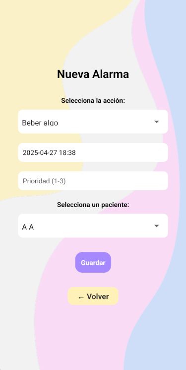

App CalmaTEA
Introdución
CalmaTEA é unha aplicación deseñada para axudar ás persoas con Trastorno do Espectro Autista (TEA), aos seus titores e administradores. A aplicación facilita a xestión de alarmas personalizadas, permite a configuración de pictogramas e sons e ofrece funcións para xestionar usuarios, alarmas e relacións entre pacientes e titores.
Estrutura da aplicación
- AndroidManifest: Define os permisos necesarios para a aplicación, como notificacións, acceso ao almacenamento e alarmas.
- AlarmBootReceiver: Receptor que garante que as alarmas se reinicien despois de reiniciar o dispositivo.
- AlarmReprogramService: Servizo que reprograma as alarmas se non se interactúa con elas a tempo.
- PushNotificationManager: Xestor de notificacións local para alarmas, que permite a reprogramación e o aprazamento de alarmas.
- AlarmReprogram: Funcións que permiten reprogramar automaticamente as alarmas cando non se validan a tempo.
Funcionalidades
- Reprogramación automática de alarmas: AlarmBootReceiver e AlarmReprogramService garanten que as alarmas se reprogramen correctamente despois de reiniciar o dispositivo ou se non se validan a tempo.
- Notificacións push: PushNotificationManager xestiona as alarmas mediante notificacións push, o que permite pospoñer obter información e reprogramar as alarmas directamente dende as notificacións.
- Personalización de alarmas: Os titores poden personalizar tanto os pictogramas, como a prioridade, como os sons asociados ás alarmas, mellorando a accesibilidade e a experiencia do usuario.
- Estatísticas e tendencias: Os titores poden ver as estatísticas de alarmas, incluídos os datos sobre alarmas validadas, aprazadas e non validadas, presentadas a través de gráficos dinámicos.
Benvida
Pantalla inicial da aplicación.
Selección de Rol
Os usuarios seleccionan o seu rol (Administrador, Titor ou Paciente). Dependendo do rol escollido, a aplicación redirixe á pantalla de inicio de sesión correspondente.(Cómpre sinalar que a opción de Administrador non estará funcional na aplicación do usuario)..
Inicio de Sesión
Autenticación para entrar na app.
Panel do Administrador
Os administradores poden xestionar pacientes, titores e as relacións entre eles. As opcións dispoñibles inclúen:
- Engadir paciente
- Engadir titor
- Vincular titor ↔ Paciente
- Eliminar paciente
- Eliminar titor
- Eliminar titor ↔ Relación do paciente
Alarmas do Paciente
Os usuarios pacientes poden ver as súas alarmas programadas. As alarmas xestiónanse mediante notificacións push.
Notificación ao Paciente
Pantalla de acción cando salta a alarma.

Menú do Titor
Os titores poden acceder a funcións como aconfiguración de alarmas, a visualización de estatísticas de pacientes e a personalización de alarmas.
Configuración de Alarmas
Permite aos titores ver e xestionar as alarmas dos pacientes, así como editalas ou eliminalas
Engadir Alarma
Os titores poden engadir novas alarmas aos pacientes. Esta pantalla permítelles seleccionar a acción (por exemplo, ”Beber algo”), definir a prioridade da alarma e definir a data usando o selector de calendario e hora para determinar cando debe soar. Ademais, pódese seleccionar un paciente entre os asociados co titor.
Estatísticas
Os titores poden ver estatísticas sobre as alarmas dos pacientes, visualizar gráficos e porcentaxes de validación de accións..


Personalización
Os titores poden personalizar as alarmas modificando pictogramas, sons e prioridade de acción.
Pictogramas
Esta pantalla permite aos usuarios personalizar os pictogramas asociados ás alarmas. Os usuarios poden escoller entre pictogramas predeterminados ou cargar imaxes personalizadas para cada acción relacionada coa alarma.
Personalización de Son
Os usuarios poden personalizar o son da alarma subindo ficheiros de son en formato MP3, WAV ou OGG. Os sons gárdanse para cada paciente seleccionado.
Prioridade das Accións
Esta pantalla permíte xestionar as prioridades das accións relacionadas coas alarmas dos pacientes. Os ti tores poden asignar prioridades (alta, media ou baixa) ás accións e axustar estas prioridades mediante os botóns de incremento e decremento.
Modificar Contas
Permite editar nome de usuario ou contrasinal do tutor e dos pacentes asignado.
Notificación ao Titor
Alerta personalizada cando o paciente apraza accións de prioridades altas.